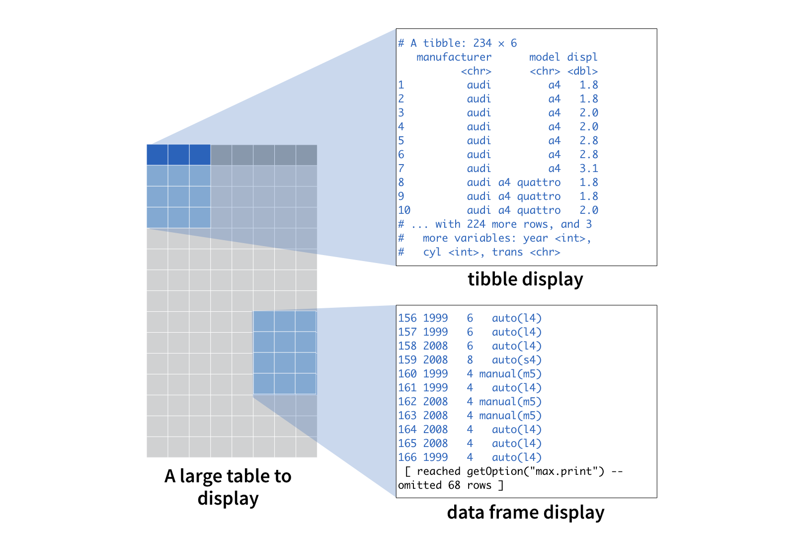

Dans ce module, vous allez explorer la popularité de différents prénoms au fil du temps. Pour réussir cette tâche, vous devrez maîtriser certains outils courants pour manipuler les données avec R :
View(), qui permettent d’inspecter vos données brutesselect() et filter(), qui permettent de selectionner des colonnes et des lignes d’un jeu de donnéesarrange(), qui vous permet de réordonner les lignes d’un jeu de données%>%, qui organise votre code sous la forme de “pipes” faciles à déchiffer (un pipe peut être vu comme un flux dans lequel divers traitements sur les données sont enchaînés)mutate(), group_by(), et summarize(), servent à calculer des statistiques descriptivesCe sont quelques-unes des fonctions R les plus utiles pour la data science, et les modules qui suivent vous fourniront tout ce dont vous avez besoin pour apprendre à les manipuler.
Dans les modules, nous utiliserons un jeu de données nommé prenoms, qui est fourni dans le package également nommé {prenoms} made in ThinkR (voir ici pour l’installer). Dans prenoms, vous trouverez des informations sur presque tous les prénoms donnés aux enfants en France métropolitaine depuis 1900.
Ce module présente prenoms ainsi qu’une nouvelle structure de données qui facilite l’utilisation des données dans R : le tibble.
En plus de {prenoms}, ce module utilise les packages de base du tidyverse, notamment {ggplot2}, {tibble} et {dplyr}. Tous ces packages ont été préinstallés mais ils n’ont pas été préchargés.
Cliquez sur le bouton “Suivant” pour commencer.
Avant de commencer, apprenons-en un peu plus sur nos données. Le jeu de données prenoms est fourni dans le package {prenoms}. Le package est préinstallé pour vous. Cependant, nous n’avons pas pré-chargé {prenoms}, ni aucun autre package d’ailleurs.
Qu’est-ce que cela veut dire ? Dans R, chaque fois que vous souhaitez utiliser un package qui ne fait pas partie de R base, vous devez charger le package avec la commande library(). Tant que vous n’aurez pas chargé un package, R ne pourra pas trouver les jeux de données et les fonctions qu’il contient. Par exemple, si nous demandions à R d’afficher le jeu de données prenoms, qui provient du package {prenoms}, nous obtiendrions le message ci-dessous : R ne peut pas trouver le jeu de données car nous n’avons pas chargé le package nécessaire.
## Error in eval(expr, envir, enclos): object 'prenoms' not foundPour charger le package {prenoms}, vous devez exécuter la commande library(prenoms). Après avoir chargé un package, R pourra trouver son contenu jusqu’à ce que vous fermiez R. En revanche, la prochaine fois que vous ouvrirez R, vous devrez recharger le package si vous souhaitez le réutiliser.
Cela peut sembler un inconvénient, mais le choix des packages à charger permet de garder le contrôle sur ce qui se passe dans votre environnement de travail avec R.
Dans le bloc de code ci-dessous, chargez {prenoms} (le package) puis ouvrez la page d’aide de prenoms (le jeu de données). Assurez-vous de lire la page d’aide avant de continuer.
library(prenoms)
?prenomslibrary(prenoms)Maintenant que vous en savez un peu sur le jeu de données, examinons son contenu. Si vous exécutez prenoms sur votre console R, vous obtiendrez une sortie qui ressemble à ceci :
prenoms
#> 155 1900 M Philippe 5 01 0.0015777848
#> 156 1900 M Pierre 47 01 0.0148311770
#> 157 1900 M Prosper 3 01 0.0009466709
#> 158 1900 M Raoul 3 01 0.0009466709
#> 159 1900 M René 14 01 0.0044177974
#> 160 1900 M Robert 6 01 0.0018933417
#> 161 1900 M Roger 3 01 0.0009466709
#> 162 1900 M Tony 3 01 0.0009466709
#> 163 1900 M Victor 18 01 0.0056800252
#> 164 1900 F Adèle 11 02 0.0021829728
#> 165 1900 F Adelina 4 02 0.0007938083
#> 166 1900 F Adeline 4 02 0.0007938083
#> [ reached 'max' / getOption("max.print") -- omitted 3763818 rows ]Oups ! Qu’est-ce qui se passe?
prenoms est un gros jeu de données, et R n’est pas bien équipé pour afficher le contenu de grande taille. R affiche autant de lignes que possible avant que votre mémoire tampon ne soit saturée. Quand cela arrive, R s’arrête, vous laissant regarder une section arbitraire de vos données.
Vous pouvez éviter ce comportement en transformant votre bloc de données en tibble.
Un tibble est un type spécial de table. R affiche les tibbles de manière astucieuse chaque fois que le package tibble est chargé. R n’affichera alors uniquement que les dix premières lignes d’un tibble ainsi que toutes les colonnes qui tiennent dans la fenêtre de votre console. R ajoute également des informations récapitulatives utiles sur les composants tibble, telles que les types de données de chaque colonne et la taille totale du jeu de données.
Chaque fois que vous n’avez pas le package {tibble} chargé, R affichera le tibble comme s’il s’agissait d’un data.frame. En fait, les tibbles sont des data.frames, mais dans une version améliorée.
Vous pouvez penser à la différence entre l’affichage du data.frame et l’affichage du tibble comme ceci :

Vous pouvez transformer un data.frame en tibble avec la fonction as_tibble() du package {tibble}, par ex. as_tibble(voitures). Cependant, prenoms est déjà un tibble. Pour l’afficher correctement, il vous suffit donc juste de charger le package {tibble}.
Pour voir ce que nous voulons dire, utilisez library() pour charger le package {tibble} dans le bloc ci-dessous, puis appelez prenoms.
library(tibble)
prenoms"Excellent ! Si vous voulez vérifier si un objet est ou non un tibble, vous pouvez utiliser la fonction `is_tibble()` fournie dans le package {tibble}. Par exemple, cela retournerait TRUE : `is_tibble(prenoms)`."Vous n’avez pas à vous soucier des tibbles dans ces modules. Dans les futurs modules, nous convertirons automatiquement chaque jeu de données en un tableau interactif. Cependant, envisagez de faire des tibbles dès que possible quand vous travaillez dans R.
Et si vous souhaitez inspecter les portions restantes d’un tibble ? Pour voir l’intégralité du tibble, utilisez la commande View(). R lancera une fenêtre qui affiche l’intégralité du jeu de données sous forme déroulante, à la maniere d’un tableur. Par exemple, le code ci-dessous lancera une visionneuse de données dans RStudio.
View(prenoms)View() fonctionne conjointement avec le logiciel à partir duquel vous exécutez R : View() ouvre l’éditeur de données fourni par ce logiciel. Malheureusement, puisque ce module de cours n’est pas délivré avec un éditeur de données, vous ne pourrez pas utiliser View() ici (si vous souhaitez expérimenter cette commande quand même, vous pouvez essayer dans RStudio).
Le package {tibble} est l’un des nombreux packages du “tidyverse”. Les packages du tidyverse partagent une philosophie commune et sont conçus pour bien fonctionner ensemble. Par exemple, dans ce module, vous utiliserez le package {tibble}, le package {ggplot2} et le package {dplyr}, qui appartiennent tous au tidyverse.
Lorsque vous utilisez des packages du tidyverse, vous pouvez vous faciliter la vie en utilisant le package {tidyverse}. Ce package fournit un raccourci pour installer et charger la liste complète des packages du tidyverse :
Considérez le package {tidyverse} comme un espace réservé pour les packages qui sont dans le “tidyverse”. En soi, le package {tidyverse} ne fait pas grand-chose, mais lorsque vous l’installez, il demande à R d’installer tous les autres packages du tidyverse en même temps. En d’autres termes, lorsque vous exécutez install.packages("tidyverse"), R installe les packages suivants pour vous en une seule étape :
Lorsque vous chargez {tidyverse} avec library("tidyverse"), il demande à R de charger les packages du tidyverse les plus couramment utilisés. Ceux-ci sont :
Vous pouvez charger les packages du tidyverse les moins couramment utilisés de la manière habituelle, en exécutant library(<nom du package>) pour chacun d’eux.
Essayons cela. Nous utiliserons les packages {ggplot2} et {dplyr} plus loin dans ce module. Utilisons le package {tidyverse} pour les charger dans le bloc ci-dessous :
library("tidyverse")Les tibbles et le package {tidyverse} en général sont deux outils qui vous facilitent la vie dans R. En effet, ces modules préchargent des packages pour vous, et ils enveloppent les jeux de données dans un tableau interactif à afficher (du moins, les modules des amorces qui suivent le feront). Cependant, vous serez ravis d’utiliser les tibbles et le package {tidyverse} lorsque vous quitterez les modules de cours et pour commencer votre propre travail avec R à l’intérieur de RStudio.
Ce module a également présenté le jeu de donnéesprenoms. Dans le module suivant, vous utiliserez ce jeu de données pour afficher graphiquement la popularité de prénoms au fil du temps (peut-être même le vôtre !). En cours de route, vous apprendrez à filtrer et à créer des sous-ensembles de données dans R.